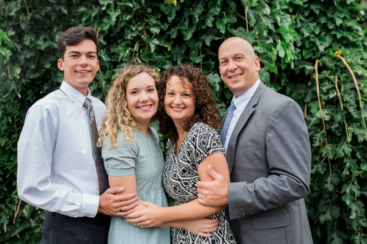

I am from Virginia.

Here are some words that tell you a little bit about me: Sunshine, white lightning, Big Allie, peanuts, name tag, Sonic, Twenty-five, two, electronically, mini cocotte, The Code Girls.
This is what they mean to me. I chose the word sunshine because I love to be outdoors on sunny days. I was born in California and love the sun. There were white lightning bolts on the set of water skis I learned to ski on. Big Allie is the name of our boat. I still love to water ski and we go to the lake as often as we can. I am adding wakeboarding to my lake skills. Peanuts are because I live in Virginia which is famous for growing peanuts. We even may serve you some peanut soup. It is actually pretty good. I served my mission in Washington, D. C. North and loved wearing my name tag. I have one child that has served a mission and one that is currently serving. She will be home in 8 months, but who’s counting? Clearly I am. Sonic is the name of my dog. My husband found her as a stray at Sonic Drive-in and now she is part of the family at 7 pounds. I have been married to my wonderful husband for 25 years. I love to study my scriptures electronically. It really helps when teaching lessons or preparing talks to be able to find my highlights that I have tagged and notes I have made. I love technology. The last kitchen gadget I got was mini Cocottes. They are cute little dishes. I like to make melting chocolate cake, soufflés or crème brulee in them. I love to cook and collect cooking gadgets when I can. The Code Girls is the title of the last book I read. It was not my favorite, but an enjoyable read.
I am working on a degree in Web Design and Development with Emphasis in Design. I like being self employed and working from home. I hope to be able to use my education to bring in some extra money while working from home.
